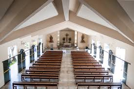

Olá, seja bem-vindo ao aplicativo!

Sobre a Paróquia
A Paróquia de São Lucas é um lugar de encontro com Deus e com a comunidade. Aqui, celebramos a fé, a esperança e o amor através da Eucaristia, da oração e do serviço ao próximo.
Leia mais sobre nossa história...